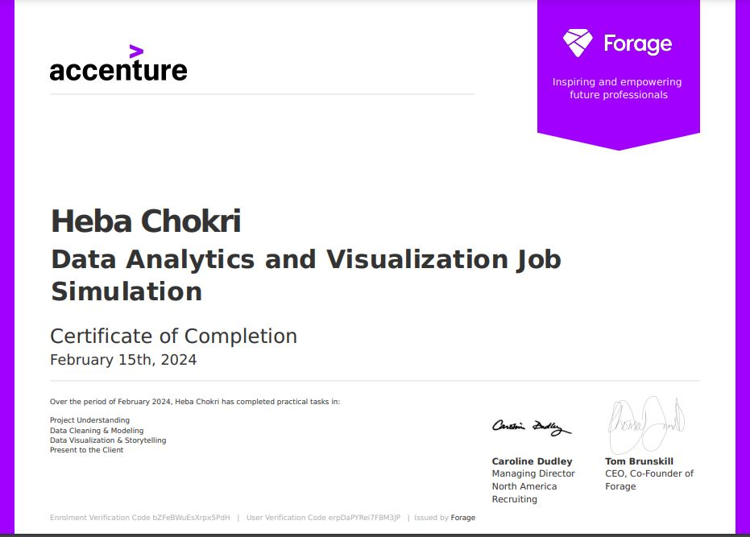
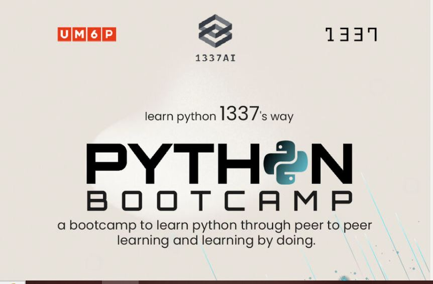
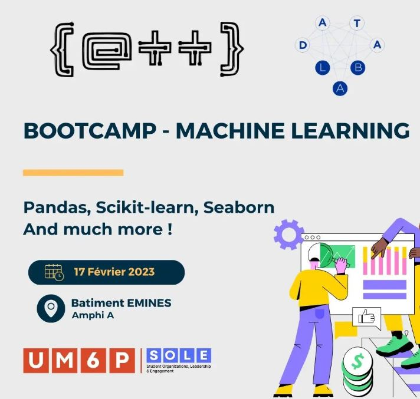
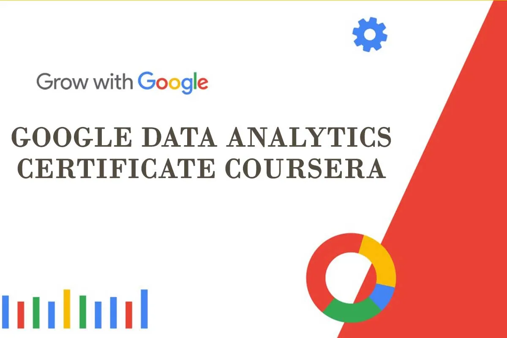
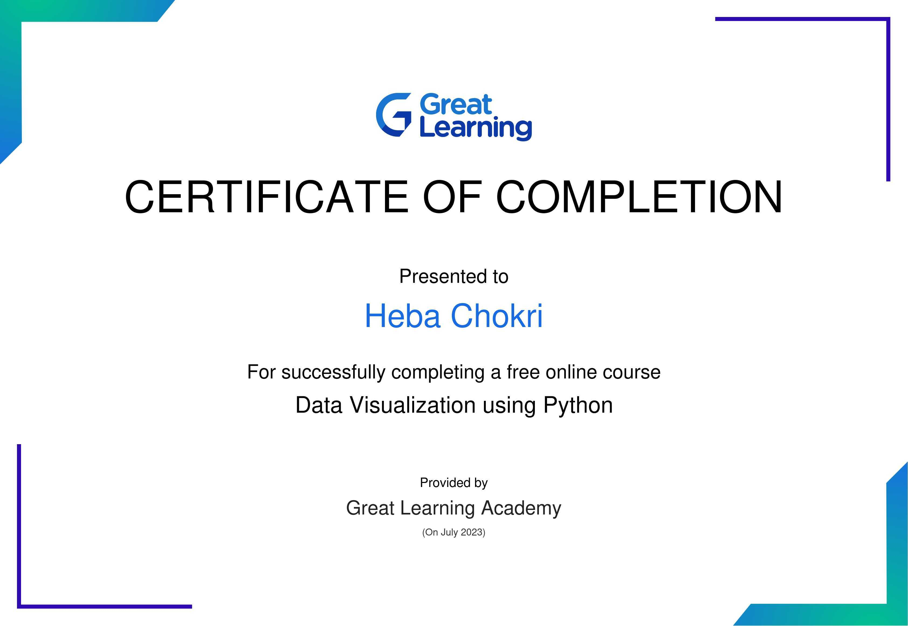
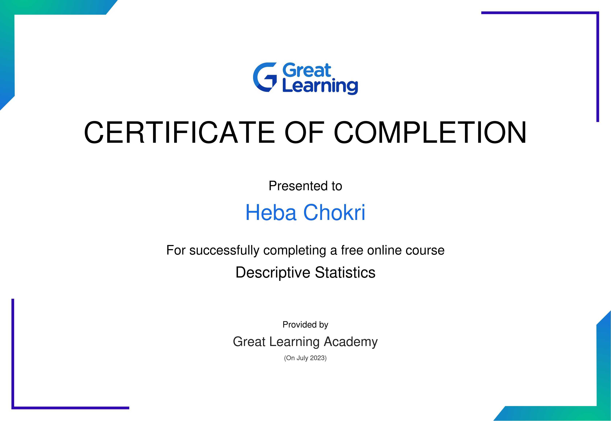
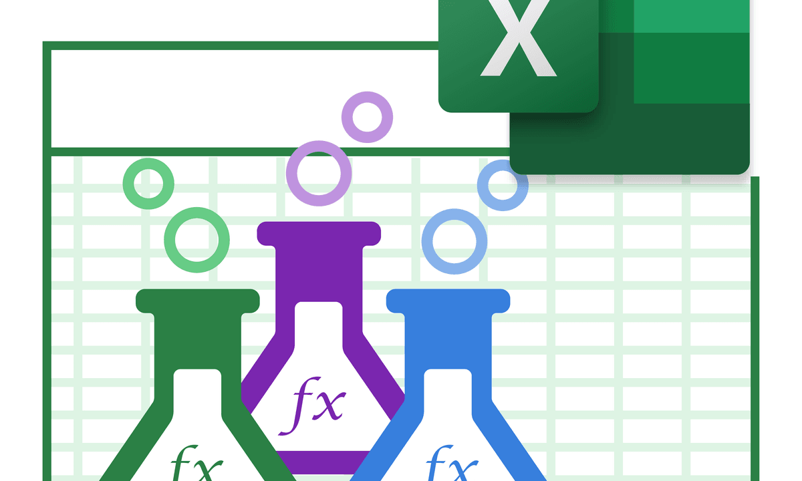
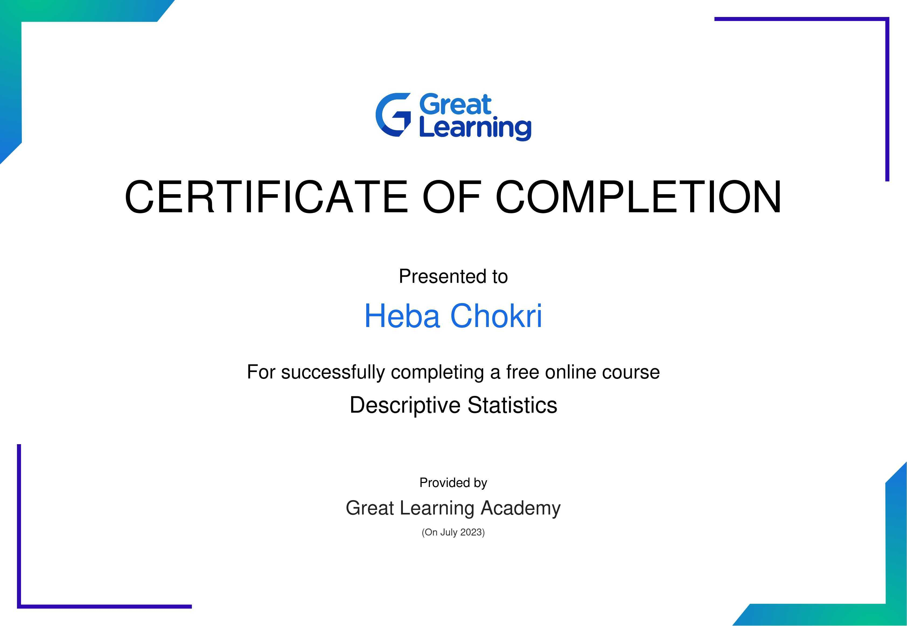
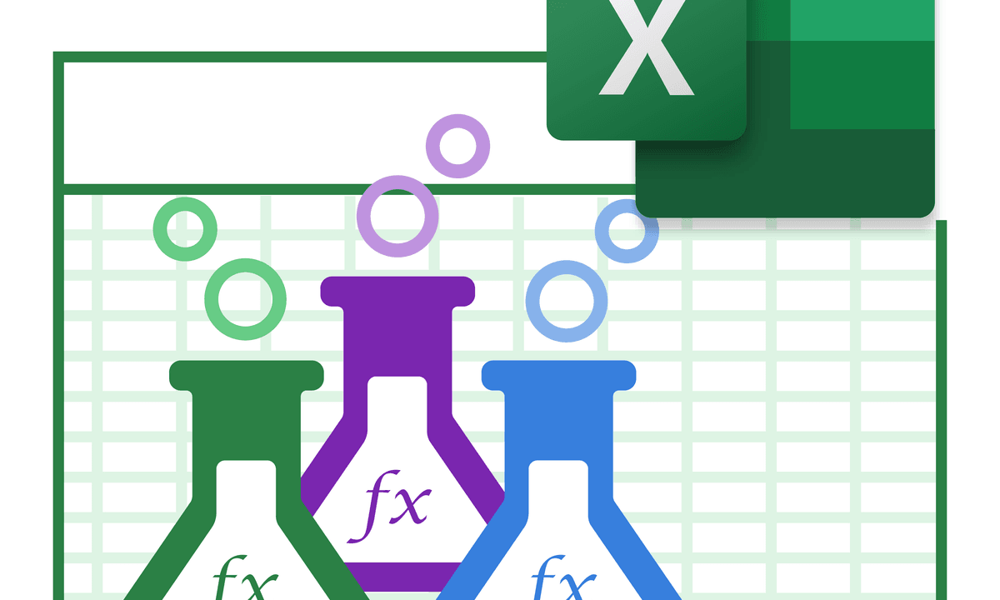

I addressed inaccuracies by rectifying incorrectly formatted data and eliminating duplicate entries. This involved employing SQL functions to standardize formatting and identifying duplicate records through comparisons across multiple columns. Additionally, I validated the cleaned data for accuracy, documented the cleaning process comprehensively, and implemented data quality checks to prevent future issues, ensuring the dataset's reliability and usability.


I used the first step of the analysis process,to know the data,and discover what patterns and trends are found in the dataset
I employed a variety of graphical representations to elucidate complex relationships within the dataset. Through the creation of multiple visualizations,bar charts, line graphs, I effectively communicated intricate patterns, correlations, and trends present in the data.

Through my experience in the Accenture job simulation, I have honed numerous skills vital to problem-solving and effective communication in a business environment,such as data understanding , data modeling using spreadsheets and data storytelling
.png)
The Data Analytics Bootcamp by Alex The Analyst was a pivotal point in my career.
It equipped me with the fundamental knowledge and skills necessary to excel in the field of data analytics.
In addition to theoretical learning, the bootcamp included guided projects that provided hands-on experience.
These projects allowed me to practice and hone essential skills such as data visualization, data manipulation, data exploration, and data cleaning.
This immersive learning experience helped me understand the practical aspects of data analytics and prepared me for real-world challenges in this domain.

I have learned how machine learning models work, the basics of training a model using regression models, and how to validate the model and assess its accuracy using the mean absolute error metric.

The Python for Data Science bootcamp at 1337 School was an intensive program that provided me with a strong understanding of Python fundamentals, especially for data science applications. During this bootcamp, I learned about various Python libraries and tools that are critical for data analysis, such as Pandas, NumPy, and Matplotlib. This experience has significantly contributed to my growth as a data science enthusiast.

I acquired knowledge about fundamental libraries used in machine learning, including pandas, scikit-learn, Numpy, and Seaborn. Additionally, I learned about various algorithms, which are instrumental in analyzing historical data to predict future trends and events

By taking this Certificate I learned,
how to prepare data for analysis, organize it for analysis, and perform computations using R, SQL, and spreadsheets.
Acquire essential tools and analytical skills (SQL, spreadsheets, R programming, Tableau)
Discover how to represent data insights visually in presentations, dashboards, and on popular visualization platforms.

 


